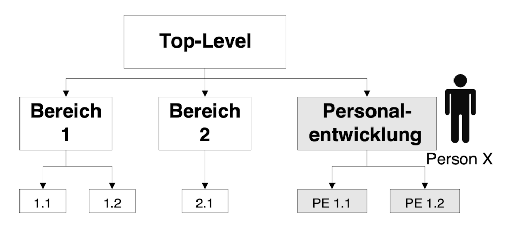
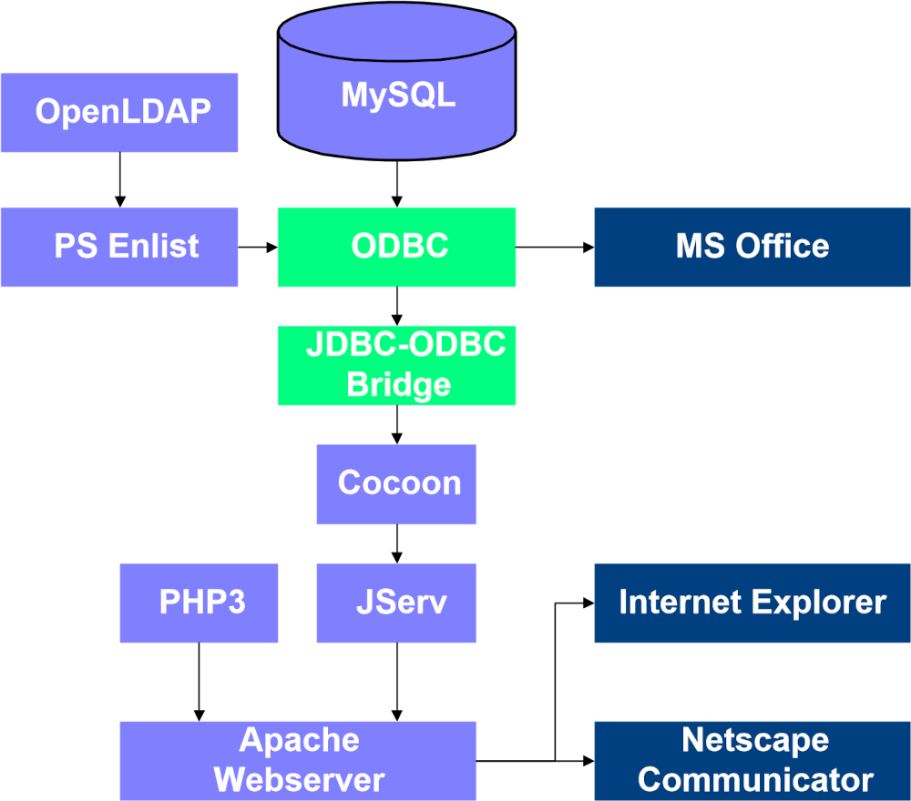

Konzeption
Anforderungen an ein Wissensmanagementsystem
Die folgenden Kriterien wurden für das Konzept eines Wissensmanagementsystems für wichtig erachtet.
Sicherheit
Eine wichtige Voraussetzung für die Wissensweitergabe ist Vertrauen. Wissensaustausch ist eine Art Marktplatz, auf dem es (Wissens-)Verkäufer, (Wissens-)Käufer und (Wissens-)Vermittler gibt (siehe 1). Die Währung auf diesem Marktplatz ist in den seltensten Fällen Geld. Vielmehr geht es um Annerkennung, Status oder die Hoffnung auf Gegenleistung. Damit einzelne Wissensgeber nicht durch Nutzer des Systems übervorteilt werden, müssen bestimmte Sicherheitsmaßnahmen getroffen werden.
Um zu gewährleisten, dass das System nicht missbraucht werden kann, ist es erforderlich, dass sich die Nutzer gegenüber dem System autorisieren müssen (im Gegensatz zum bestehenden Intranet), um bestimmte Aktionen durchführen zu können (zum Beispiel das Einstellen von Dokumenten).
Um redundante Datenhaltung zu vermeiden, ist es sinnvoll, an die bereits bestehende Nutzerverwaltung anzuknüpfen. Dafür muss sich das System an die Userverwaltung von NT (zum Beispiel über SMB), UNIX (zum Beispiel passwd, NIS), Lotus Notes oder neuere Standards (zum Beispiel LDAP) anbinden lassen.
In dem System muss immer klar erkennbar sein, wer Urheber eines Elements ist und wer Zugriff auf einzelne Elemente hat. Während es in einem Wissensmanagementsystem die Regel sein sollte, dass die meisten Elemente frei zugänglich sind, gibt es Einzelfälle, in denen die Möglichkeit bestehen muss, einen bestimmten Bereich für einen autorisierten Personenkreis zugänglich zu machen.
Fazit: Vertrauen durch Sicherheit aufzubauen ist eine wichtige Aufgabe des Wissensmanagementsystems. Zugriffsrechte und Systemnutzer müssen zu jedem Zeitpunkt transparent sein.
Plattformunabhängigkeit
Plattformunabhängigkeit ist ein sehr wichtiger Aspekt für ein Wissensmanagementsystem am IIS. Wie bereits beschrieben, ist das Umfeld sowohl aus Software- als auch aus Hardwaresicht sehr heterogen, was die Beschränkung auf eine Plattform unmöglich macht.
Die effizienteste Lösung ist in diesem Fall die Webtechnologie. Webbrowser sind auf jeder Plattform standardmäßig verfügbar. Zusammen mit Techniken wie Javascript und Cascading Stylesheets (CSS) bietet sich die Möglichkeit ein umfangreiches und zugleich mächtiges Werkzeug anbieten zu können.
Hinweis: Die Verwendung von Java in Form von Java-Applets wurde ausgeschlossen. Es entsteht bei der Übertragung des Javacodes vom Server an den Client eine lange Ladezeit. Außerdem sind die virtuellen Javamaschinen, die im Client verwendet werden, um den Code auszuführen, auf den einzelnen Plattformen nicht identisch implementiert, so dass die Anforderung der Plattformunabhängigikeit nur bedingt erfüllt ist.
Einfache, intuitive Bedienbarkeit
Bei vielen modernen Systemen fällt die Einarbeitung schwer, da sich der Nutzer an ein neues Interface, neue Funktionen, etc. gewöhnen muss. Lotus Notes am IIS ist dafür ein gutes Beispiel. Da es für das Institut keine angepasste Lösung gibt, steht ein neuer Nutzer einer Vielzahl von Funktionen in Form von Buttons, Menüs, etc. gegenüber, deren Nutzen für ihn nicht sofort erkennbar ist.
Es fällt schwer, den persönlichen Nutzen durch das System abzuschätzen und die Gefahr, dass das Interesse nachlässt, ist groß.
Das Benutzerinterface in diesem Konzept soll so gestaltet werden, dass sich jeder Nutzer schnell zurechtfindet und seinen Nutzen einschätzen kann. Diese Eigenschaft soll dadurch erreicht werden, dass der Nutzer in allen Bereichen des Systems eine ähnliche Umgebung vorfindet und verschiedene Elemente, wie zum Beispiel das kontextsensitive Menü, immer an der gleichen Stelle zu finden sind.
Sparsame Verwendung von Farbe und Zuordnung von Symbolen zu bestimmten Bereichen erhöht den Komfort beim Navigieren. Bestimmte Elemente, wie globales Menü und Suchfunktion, sind in jeder Ansicht vorhanden.
Erweiterbarkeit, Flexibilität
Ebenso, wie sich das zu verwaltende Wissen verändert, muss auch das System in der Lage sein, sich anzupassen. Dies betrifft sowohl die verwalteten Inhalte als auch die Struktur und die Darstellung, in der diese präsentiert werden. Es muss die Möglichkeit bestehen, das System sehr einfach um benötigte Funktionen zu erweitern.
Weiterhin muss sich das System durch den Anwender an dessen Bedürfnisse anpassen lassen. Diese Anforderung bedingt, dass eine Technik zum Einsatz kommt, die eine Trennung von Inhalt, Logik und Layout zulässt. Somit kann der Benutzer beispielsweise das Aussehen seines Bereichs völlig neu gestalten, wobei die Inhalte identisch bleiben.
Logisch strukturiert
Für die Navigation in den Wissenselementen ist eine unterliegende logische Struktur (Wissenslandkarten) unbedingt nötig. So lange nur geringe Datenmengen zu handhaben sind, erweist sich die Volltextsuche als ausreichend. Vergrößert sich aber der Datenbestand, so muss auch eine strukturierte Navigation oder eine Kombination aus beidem möglich sein.
Das Fehlen einer solchen Struktur führt im IIS beispielsweise dazu, dass vielen Mitarbeitern die Onlinesammlung von Studien- und Diplomarbeiten nicht bekannt ist. Auch über ein Suchinterface sind diese Arbeiten nicht auffindbar.
Die Frage nach einem geeigneten Weg, jedes einzelne Wissenselement in einen Gesamtkontext einzubetten, wird im Rahmen dieser Diplomarbeit nicht geklärt. Eine solche Vorgehensweise muss für das gesamte IIS festgelegt werden.
Auf der einen Seite kann die Vergabe von Kategorien und Schlagwörtern vorgeschrieben werden. Dies bedingt ein hierarchisches Glossar, das jedes beliebige Thema erfassen kann. Ein solches Glossar stellt beispielsweise die Dewey-Dezimalklassifikation dar. Gerade bei fachspezifischen Themen geht allerdings auch diese Klassifikation nicht ausreichend in die Tiefe.
Die zweite Möglichkeit besteht darin, die Verschlagwortung dem Nutzer zu überlassen, was zur Folge haben kann, dass einzelne Dokumente nicht an allen Stellen auftauchen, an denen sie relevant sind.
Sinnvoller ist, die Kategorisierung bis zu einer gewissen Stufe vorzuschreiben und ab dieser Stufe freie Verschlagwortung ergänzend zuzulassen. Eine Möglichkeit für ein solches Vorgehen ist, die Verantwortlichen für die einzelnen Kernkompetenzen zu identifizieren (=Kernkompetenz als erste Hierarchiestufe) und diese zu beauftragen, eine zweite Schlagworthierarchie mit cirka 10-20 Kategorien zu definieren.
Beide Schlagworthierarchien müssen in regelmäßigen Abständen überprüft und ergänzt werden.
Verwendung von Standards
Proprietäre Formate besitzen im Vergleich zu Standards den Nachteil, dass die Daten nur in der Applikation verwendet werden können, für die sie angelegt worden sind. Das zu konzipierende System soll konsequent auf bestehende Standards aufbauen, um diesen Nachteil zu umgehen.
Austauschformate zwischen einzelnen Applikationen wie beispielsweise XML werden sich immer mehr durchsetzen. Die Integration der bisher bestehenden Insellösungen zu einem Gesamtsystem, das auf einen einheitlichen Datenbestand zurückgreift, wird eine der entscheidenden Herausforderungen sein.
Mit Standardsoftware bedienbar
Diese Anforderung ist eine Erweiterung der Forderungen nach Plattformunabhängigkeit und der Verwendung von Standards. Für die Bedienung des Systems müssen gängige, und damit auf jeder Plattform verfügbare, Werkzeuge ausreichend sein. Zu dem Oberbegriff Bedienung zählen die Administratio, das Abfragen von Inhalt als auch das Einstellen von neuen Inhalten (Publishing).
Für die Bedienung des zu konzipierenden Systems sollen die Produkte Netscape Communicator, Internet Explorer/Frontpage Express und das Microsoft Office ausreichend sein. Die Browser müssen mindestens in der Version 4.x verwendet werden, um die Präsenz bestimmter Funktionen sicherzustellen.
Methoden
Die Methoden, die in der Konzeptionsphase in dem Wissensmanagementsystem implementiert werden, sind nur ein kleiner Teil der benötigten Methoden. Sie ermöglichen es, die Mächtigkeit des Systems zu demonstrieren, müssen aber noch um weitere ergänzt werden.
White Page Dienst
Was für öffentliche Telefonnetze das Telefonbuch oder die gelben Seiten darstellen, sind im Internet die White Page Dienste. Ein solcher Dienst zeichnet sich dadurch aus, dass Personen nach bestimmten Kriterien gesucht werden können. So ist es beispielsweise möglich, zu einer Emailadresse auch Telefonnummer oder Adresse zu recherchieren.
In einem Wissensmanagementsystem ist es nützlich, die Informationen, die vom White Page Dienst geliefert werden, über die rein administrativen Angaben (Email, Telefon, Adresse, etc., siehe 2) noch um wissensrelevante Informationen ,wie Fachgebiete eines Mitarbeiters, Teilnahme an Projekten oder Fortbildungen, zu erweitern.
Der White Page Dienst kann außerdem dazu genutzt werden, alle neuen Mitarbeiter automatisch vorzustellen. Dieser Vorgang erleichtert dem neuen Mitarbeiter die Integration und macht gleichzeitig dessen Kenntnisse im Institut bekannt.
Zu beachten ist bei einem solchen Dienst der Datenschutz. Alle Maßnahmen sind in jedem Fall mit dem Datenschutzbeauftragten abzuklären. Die beste Möglichkeit, Probleme zu umgehen, ist, dem Mitarbeiter die Entscheidung zu überlassen, ob seine Daten öffentlich verfügbar sind.
Diskussionsforum
Für jede Gruppierung im Institut soll es möglich sein, Diskussionsforen zu bestimmten Themen einzurichten. Diese Foren sollen an bestehende Maillisten angeknüpft werden können und müssen ihre Daten in einer Datenbank abspeichern, um Weiterverwendung zu ermöglichen.
Verwaltung von Teilbereichen dezentralisierbar
Neben der zentralen Benutzerverwaltung muss es möglich sein, in einzelnen Bereichen lokale Rechte zu vergeben. Der Nutzen einer solchen Möglichkeit soll an einem Beispiel verdeutlicht werden.
Der Bereich Personalentwicklung wird am IIS von einer Person betreut, die im Folgenden Person X genannt wird. Es wird also einen Bereich Personalentwicklung in dem System geben, dessen Administrator Person X ist (siehe Abbildung 3-1). Im restlichen System ist Person X ganz normaler Mitarbeiter und mit keinen Zusatzrechten ausgestattet. Person X kann ihrerseits die Verwaltung bestimmter Unterbereiche an andere Personen übertragen.

Newssektion
Eine Newssektion soll die Möglichkeit bieten, zu bestimmten Themen Neuigkeiten zu veröffentlichen. Es muss die Möglichkeit bestehen, dass bestimmte Mitarbeiter ihre Mitteilungen direkt veröffentlichen können (zum Beispiel Leitungskreisprotokolle), während andere Beiträge zuerst geprüft werden müssen, um Missbrauch zu vermeiden. Alle Mitteilungen sollen in einem übersichtlichen Format auf der Einstiegsseite präsentiert werden.
Pro Tag sollten maximal 5-10 neue Beiträge erscheinen. Beiträge, die älter als ein zu definierender Zeitraum sind, werden aus der Newssektion gelöscht, stehen aber weiterhin über eine Suchmaske zur Verfügung.
Privater Bereich
Jeder Mitarbeiter hat einen eigenen Bereich, in dem er eigene Inhalte ablegen und zusätzliche Einstellungen für sein Profil vornehmen kann.
Dieser private Bereich dient zum Einen als Visitenkarte des Mitarbeiters im Institut, stellt auf der anderen Seite aber auch eine Arbeitsumgebung für den Mitarbeiter dar, die er sich nach seinen Wünschen einrichten kann.
Möglichkeit datenbankgestützter Anwendungen
Die Erstellung neuer datenbankgestützter Applikationen und das Einrichten von Schnittstellen muss für den Endanwender so einfach wie möglich sein. Prinzipiell sollten zwei unterschiedliche Anwendungsfälle unterstützt werden.
Daten, die lokal in Datenbanken gespeichert werden (MS Access, Oracle, Filemaker, etc.), werden über einen Synchronisationsmechanismus in eine zentrale Datenbank übertragen. Dort stehen sie dann dem Wissensmanagementsystem zur Verfügung.
Ein Beispiel hierfür ist eine Microsoft Access Datenbank, in der Daten von Personen geführt werden, die sich für ein Praktikum am IIS interessieren. Der Verwalter dieser Liste soll in der Lage sein, nur informelle Daten zu veröffentlichen (zum Beispiel Studiengang, Vorkenntnisse,...), und persönliche Daten wie Adresse, Telefonnummer, etc. nur in seiner lokalen Datenbank zu führen.
Das Szenario zentrale Datenbank zielt auf Anwendungenab,bei denen man aus einem zentralen Datenbestand eine Auswahl selektieren möchte. Der Vorteil dieser Methode besteht darin, dass viele Einzelapplikationen auf einen zentralen Datenbestand zurückgreifen könne und die Notwendigkeit für mehrfache (=redundante) Datenhaltung entfällt.

Beispiel hierfür ist eine Datenbank, die Fachartikel oder Datenblätter verwaltet. Während die aufzunehmenden Daten immer gleich sind (Titel, Autor, Zusammenfassung,...), hat jeder Anwender sehr spezielle Anforderungen an seine Sicht auf die Daten. So könnte ein Mitarbeiter an allen Artikeln interessiert sein, die sich mit dem Thema UMTS befassen, während ein anderer nach Artikeln von bestimmten Autoren sucht und diese in ein Worddokument einbinden möchte.
Um derartige Anwendungen zu ermöglichen, muss für das gesamte Institut ein Datenbankserver eingerichtet werden, auf dem Personen oder Gruppierungen Bereiche anfordern können. Diese Datenbereiche müssen über die standardisierte Datenbankschnittstelle ODBC zugänglich sein (siehe Abbildung 3-2). Im Einzelfall bedeutet das, dass Daten von allen ODBC-fähigen Softwarepaketen (zum Beispiel Microsoft Word, Microsoft Excel, Microsoft Access,...) geschrieben und gelesen werden können, sofern die entsprechenden Berechtigungen vorhanden sind.
Die Notwendigkeit, neue Datenbanktechniken erlernen zu müssen, entfällt. Der Endanwender kann weiterhin in der gewohnten Umgebung arbeiten. Die Problematiken Backup und Sicherheit müssen nur einmal für den zentralen Server gelöst werden. Bei den Nutzern der Datenbank fällt kein zusätzlicher, administrativer Aufwand an.
Im System müssen komfortable Werkzeuge vorhanden sein, um Daten aus Datenbanken abzufragen un neue Daten einzugeben.
Suchfunktionen
Das System muss die Möglichkeit bieten, auf dem kompletten Inhalt (Dokumente, HowTos, Diskussionsgruppen, etc.) Volltextsuchen durchzuführen. Die Verantwortlichen für die einzelnen Inhalte sollen dafür keine zusätzlichen Anstrengungen unternehmen müssen. Die Volltextindizierung muss automatisch verlaufen.
Die Bereiche, die indiziert werden, sollen zusätzlich durch externe Bereiche, wie zum Beispiel Webseiten, ergänzbar sein. Diese Eigenschaft ermöglicht es, wichtige Internetangebote in die Suche einzubeziehen.
Systemauswahl
Kommerzielle Systeme
Lotus Notes/Domino
Ein Lotus Notes System besteht aus einem oder mehreren Servern (Domino) und entsprechenden Clients (Notes), die auf den Server zugreifen. Die Zielsetzung dieses Systems ist die Bereitstellung einer Plattform, auf der bestimmte Dienste, unabhängig vom jeweiligen Betriebssystem der Clients, angeboten werden können.
Im Lieferumfang des Lotus Notes Paketes sind deswegen nur sehr wenig Funktionen enthalten. Zu nennen sind Mailclient, ein Kalender und Diskussionsforen. Das System muss, je nach Anforderungen, um die gewünschte Funktionalität erweitert werden.
Diese Erweiterung kann prinzipiell auf zwei Wegen erfolgen: Entweder werden Anwendungen auf der Notes Plattform programmiert, wozu die Notes Entwicklungstechniken erlernt werden müssen, oder es werden Produkte von Firmen gekauft, die für die Notesplattform entwickeln. Diese Produkte gibt es mittlerweile für alle in einer Firma benötigten Funktionen, wie Dokumentenmanagement, Kontaktverfolgung, Customer Care, etc.
Eigene Applikationen wurden am IIS bereits programmiert. Es entstand, in relativ langer Programmierzeit, eine Adressdatenbank, mit der Kundenkontakte verfolgt werden können. Diese Datenbank ist mittlerweile in vielen Abteilungen im Einsatz. Eine Erweiterung ist für den Endanwender kaum möglich, da hierzu Programmierkenntnisse und entsprechende Rechte notwendig sind.
Eine weitere, bereits realisierte Applikation ist das Helpdesksystem der Systemadministratoren. Dieses bietet die Möglichkeit, Anfragen an die Administratoren durch ein Webinterface zu erstellen.
Die Einführung und der Betrieb von Notes ist sehr supportaufwendig. Allein die Installation der Clients (Rollout) nimmt einige Monate in Anspruch. Die Installation der Clients ist allerdings nur ein kleiner Teil der Arbeit. Der größere Teil liegt darin, zu definieren, welche Applikationen auf der Notes-Plattform überhaupt implementiert werden sollen. Dazu muss eine ganz klare Notes-Strategie definiert sein, die mit Zielen, Ressourcen und Zeitplänen versehen ist.
Fazit: Das System Lotus Notes/Domino ist prinzipiell gut für die Funktion eines Wissensmanagementsystems geeignet. Es gibt allerdings einige Nachteile, die gegen eine Verwendung am IIS sprechen.
- Mangelnde Verbreitung von Clients: Die Zahl der Clients ist sehr gering. Das bedeutet, dass mit einem Notes-System nur ein kleiner Teil der Mitarbeiter abgedeckt wird.
- Mangelnder Support: Support für die Plattform Notes ist kaum vorhanden. Zwar besteht die Möglichkeit, einen Client installiert zu bekommen, darüber hinaus gibt es aber keine Einführung o.ä. in die Nutzung/Weiterentwicklung von Notes.
- Aufwendige Einarbeitung für Endnutzer: Ein Mitarbeiter, der bestimmte Funktionalität in Notes implementieren möchte, hat eine relativ steile Lernkurve zu durchlaufen, da es sehr zeitaufwendig ist, sich in die Notes-Technik einzuarbeiten. Auch die tägliche Benutzung des Notesclients ist nicht intuitiv möglich.
- Fehlende Strategie für die Einführung: Da es für das Produkt keine klare Einführungsstrategie gibt, ist unsicher, ob Notes überhaupt irgendwann als Plattform für alle Mitarbeiter zur erfügung stehen wird. Die Einführung zieht sich mittlerweile über mehrere Jahre, weswegen viele Mitarbeiter verunsichert sind.
- Aspekt der Plattformunabhängigkeit geht verloren: Ein wichtiger Grund für die Entscheidung für den Kauf von Notes war die Tatsache, dass Notes Clients für die meisten am IIS vorhandenen Plattformen (Windows/Mac/UNIX) bereitstellt. Ab der Version 5 (die sich im IIS bereits im Teststadium befindet) wird kein Client mehr für UNIX Systeme angeboten, was den angesprochenen Vorteil neutralisiert.
Microsoft Outlook/Exchange
Die Kombination aus Outlook und Exchange ist prinzipiell als Microsoft Pendant zu Notes/Domino zu verstehen. Als Mitglied der Microsoft Office Produktpalette ist der Outlook Client am IIS bereits für jeden Mitarbeiter lizenziert.
Der Exchange Server ist zwar im Microsoft Select Vertrag enthalten, aber für das IIS nicht lizenziert. Wie auch für den Betrieb eines Lotus Domino Servers ist für Exchange eine Lizenz erforderlich.
Die Kombination aus Outlook und Exchange bietet einige Vorteile gegenüber der Notesplattform, die im Folgenden näher erläutert werden sollen.
Durch die Zugehörigkeit zum Microsoft Office kann der Outlook Client wesentlich intuitiver bedient werden als der Notes Client. Oberflächen und Benutzerführung sind dem Office gegenüber ähnlich aufgebaut.
Die Applikationen des MS Office sind in Outlook/Exchange gut integrierbar. So ist es beispielsweise möglich, das Erstellen von Dokumenten und deren Versand oder Ablage automatisch in einem Journal zu protokollieren. Dieses Journal dient dann als Kontakthistorie für einzelne Personen. Das Verteilen von Aufgaben per Mail ist ebenso möglich wie bei Notes. Allerdings können in Outlook diese Aufgaben beispielsweise in Microsoft Project integriert werden.
Um das Outlook/Exchange System zu erweitern sind weniger Programmierkenntnisse erforderlich als bei Notes. So genannte Outlook Formulare können mit den Funktionen des Microsoft Office leicht erstellt und veröffentlicht werden. Das Erlernen neuer Programmiersprachen ist für einfache Erweiterungen nicht nötig.
Fazit: Die Kombination aus Outlook und Exchange ist sehr gut geeignet, um den Kommunikationsteil eines Wissensmanagementsystems am IIS zu realisieren. Die intuitive Benutzung, die Verfügbarkeit auf Windows und Mac und die gute Integration des Microsoft Office machen es der Notes Lösung überlegen. Zu beachten ist aber auch der psychologische Aspekt. Lotus Notes ist bereits gekauft worden und wird an einigen Stellen auch verwendet. Eine mögliche Umstellung auf Outlook/Exchange wird deswegen sicherlich Reibungspunkte mit sich bringen. Die Entscheidung muss auf alle Fälle basierend auf fundierten Erkenntnissen getroffen werden.
Open Source/Freie Systeme
TWIG - The Web Integration Gateway
Die beste Umschreibung für die Funktionen von Twig ist Mini-Groupware. Die Funktionen von Twig sind hauptsächlich im Kommunikationsbereich angesiedelt. Mit den im Folgenden beschriebenen Funktionen eignet es sich eher als kleines Internetportal als für ein Wissensmanagementsystem.
- Email (über IMAP)
- Kontakte (in Form eines Adressbuchs)
- Termine
- Usenet Newsgruppen (NNTP)
- ToDo Listen
- Bookmarks
Als Wissensmanagementplattform für das IIS eignet sich TWIG nicht, da es über seine Funktionen hinaus nur schwer erweiterbar ist. Es fehlen beispielsweise wichtige Funktionen wie die Datenbankunterstützung. Da Twig komplett in PHP3 geschrieben ist, könnten diese Funktionen nachgerüstet werden, was allerdings sehr arbeitsintensiv ist.
ZOPE - Z Object Publishing Environment
ZOPE eignet sich mit seinem offenen, objektorientierten Ansatz und seiner einfachen Bedienbarkeit hervorragend als Plattform für das IIS. Die Eigenschaften dieses Application Server sollen im Folgenden näher beleuchtet werden.
Ein auf ZOPE basierendes System ist vollständig webbasiert. Das bedeutet, dass sowohl der Benutzer, der Administrator, als auch der Entwickler mit einem normalen Webbrowser auskommen. Die Installation von speziellen Clients ist (im Gegensatz zu Lotus Notes) nicht nötig und erspart viel Zeit.
Das System ZOPE kann sehr komfortabel durch sogenannte Produkte über den Standardumfang hinaus erweitert werden. Im Standardumfang sind oft benötigte Elemente wie Folder, Dateien, DTML-Methoden, Bilder und Indizierfunktionen enthalten.
Es gibt Produkte, mit denen man Verbindungen zu Datenbanken herstellen, Umfragen erstellen und lokale Filesysteme einbinden kann. Zum Zeitpunkt dieser Arbeit waren bei ZOPE über 110 verschiedene Produkte verfügbar.
ZOPE unterstützt alle im Konzept geforderten Standards und darüber hinaus noch einige mehr (HTML 4, CSS, HTTP 1.1, FastCGI, FTP, WebDAV, DOM, XML, XML-RPC, SQL, RSS, LDAP). Besonders durch die Verwendung der Standards HTTP/WebDAV ist eine Integration in die Microsoft Office Produktpalette sehr einfach möglich.
In ZOPE können logische Funktionen durch das, von XML abgeleitete, Derivat DTML (Document Type Markup Language) realisiert werden. Bevor ZOPE eine Seite an einen Client überträgt, prüft es diese auf vorhandene DTML-Tags, wertet diese aus und sendet das Ergebnis an den Client. Diese Vorgehensweise ist ähnlich wie bei PHP.
In DTML existieren Befehle für die meisten benötigten Funktionen. Dazu gehören unter anderem Datenbankabfragen, der Versand von Emails und die Deklaration von Variablen. Obwohl das System ZOPE in Python programmiert ist, wird der normale Entwickler im Normalfall nicht mit dieser Programmiersprache konfrontiert und kann seine Applikation vollständig in DTML implementieren.
Mit XML Document steht ein Produkt zur Verfügung, mit dem XML-Inhalte in das System integriert werden können. XML Document repräsentiert ein Dokument in der standardisierten DOM API. Über diese API können Elemente des Dokuments abgefragt, eingefügt oder verändert werden. Produkte, die ein XML Dokument in eine darstellbare Form (zum Beispiel HTML) umwandeln, stehen ebenfalls bereit.
Um beispielsweise in Lotus Notes eine Applikation zu entwickeln, muss man die Notes-eigene Programmiersprache erlernen, was mit einer steilen Lernkurve verbunden ist. Bei ZOPE ist der Einstieg viel einfacher möglich. Falls kein fertiges Produkt existiert, können kleine Applikationen bereits mit einfachen HTML/CGI Kenntnissen erstellt werden. Einfache Funktionen können somit maßgeschneidert durch Mitarbeiter selbst erstellt werden. Spezielle Lizenzen, wie die Notes-Entwicklerlizenz, sind nicht nötig.
Obwohl ZOPE mit einer Datenbank zusammen ausgeliefert wird, kann man prinzipiell jede SQL Datenbank (zum Beispiel Oracle, MySQL, Microsoft SQL) als Datenspeicher verwenden. Die integrierte ZODB (ZOPE Objectoriented Database) bietet allerdings einige sehr komfortable Funktionen, die bei Verwendung einer relationalen Datenbank fehlen.
Durch die Objektorientierung kann jeder Vorgang, wie zum Beispiel das Löschen eines Elements, rückgängig gemacht werden (UNDO Funktion).
Bei der Verwendung der ZODB besteht weiterhin die Möglichkeit der Versionsverwaltung. Hierbei kann der Entwickler eine neue Version eines Bereiches erstellen, ohne dass diese von den Nutzern des Systems abgefragt werden können. Die Nutzer sehen noch die alte Version. Erst wenn der Entwickler die neue Version freigibt, können andere darauf zugreifen.
Die Objekte in der Datenbank (ZODB) werden über ein sogenanntes URL-Objekt-Mapping adressiert. Dadurch kann jedes Objekt durch eine URL eindeutig angesprochen werden. Auf die Objekte können dann verschiedene Methoden angewendet werden.
Die Vererbung ist ein sehr mächtiges Hilfsmittel in ZOPE und ist sehr vielseitig einsetzbar. Jedes Unterverzeichnis erbt Rechte und Eigenschaften des übergeordneten Verzeichnisses. Das bedeutet, dass beispielsweise eine Person, die in oberster Ebene eine bestimmte Rolle zugewiesen bekommen hat, diese Rolle durch Vererbung auch in allen Unterverzeichnissen besitzt.
Eine weitere Anwendungsmöglichkeit der Vererbung ist, auf Toplevel allgemeingültige Objekte (zum Beispiel das Institutslogo) abzulegen. Dieses steht dann jedem Benutzer in den unteren Leveln zur Verfügung.
Prinzipiell kann die Benutzerverwaltung von ZOPE auf unterschiedlichen Wegen realisiert werden. Am einfachsten ist die in ZOPE integrierte Benutzerverwaltung, der sogenannte UserFolder. Dieser hat allerdings den Nachteil, dass jeder Nutzer manuell eingetragen werden muss und diese Daten außerhalb von ZOPE nicht zur Verfügung stehen.
Eine weitere Möglichkeit besteht darin, ZOPE über bestehende Benutzerverwaltungen wie zum Beispiel die von Microsoft Windows NT autentifizieren zu lassen. Hierzu wird ein bestimmtes Produkt (zum Beispiel NTUserFolder) benötigt. Der große Vorteil dieser Lösung besteht darin, dass mit NT bereits eine gepflegte Benutzerverwaltung am IIS vorliegt und diese unmodifiziert verwendet werden kann.
Langfristig ist allerdings empfehlenswert, alle Dienste, die Autentifizierung benötigen, aus einer gemeinsamen Quelle zu speisen. An dieser Stelle bietet sich LDAP als Standard an. Über LDAP kann nicht nur ZOPE, sondern auch Windows NT, UNIX, Dokumentenmanagementsysteme u.v.m. autentifizieren.
Besitzt eine Person auf einer Ebene Managerrecht, so kann diese Person die Benutzerverwaltung in ihrem Bereich selbst übernehmen. Ein Abteilungsleiter (als Manager seines Abteilungsbereichs) kann beispielsweise den Gruppen einen Unterbereich einrichten und festlegen, wer in seinem Bereich lesen, schreiben, bearbeiten, etc. kann.
Diese Funktion bietet sich an, wenn Personen, wie zum Beispiel Studienarbeiter, in der globalen Nutzerverwaltung noch nicht enthalten sind, aber dennoch Zugang zu einem Bereich des Systems bekommen sollen.
Jetspeed
Das Projekt Jetspeed beschreibt sich selbst als Enterprise Information Portal und Webbased Groupware. Die Projektwebseite lässt darauf schließen, dass es sich um einen sehr vielversprechenden Ansatz handelt. Leider wurde eine sinnvoll nutzbare Version erst am 21.03.2000 veröffentlicht, was eine Verifizierung leider nicht mehr möglich gemacht hat.
Interessant an Jetspeed ist, dass es sich um ein Projekt der sehr engagierten Apache Group, die auch den Webserver Apache entwickelt, handelt. Da auch Projekte wie JServ (Java Servlet Engine für Apache) oder Cocoon von dieser Gruppe durchgeführt werden, kann mit sehr großen Synergieeffekten in den Bereichen Java und XML gerechnet werde. Die einzelnen Projekte der Apache Group sind so ausgerichtet, dass die einzelnen Komponenten projektübergreifend eingesetzt werden können. Jetspeed unterstützt nach Aussage der Entwickler bereits viele Standards und Funktionen:
- XML
- Datenbank Benutzerautentifizierung (leider nicht über LDAP oder NT Domäne)
- Rich Site Summary (RSS)
- XML/XSL Inhalt durch Integration von Cocoon
- XML basierte Konfiguration
- Plattformunabhängig (einzige Bedingung JDK 1.1 und Servlet 2.0)
- Synchronisation mit Avantgo
Midgard
Von der Beschreibung her ist Midgard ähnlich einzustufen wie ZOPE. Im Gegensatz zu ZOPE ist Midgard allerdings ein abgeschlossenes System. Die Unterstützung für weitere externe Pakete fehlt. Außerdem ist die Unterstützung von Datenbanken sehr eingeschränkt, da nur MySQL unterstützt wird und auch die Anbindung an LDAP zum Autentifizieren nicht möglich ist.
Vom Funktionsumfang ist Midgard, trotz seines Untertitels Application Server Suite, eher in die Kategorie Publishing-System einzuordnen. Als Wissensmanagementsystem am IIS kommt Midgard aus den genannten Gründen nicht in Frage.
Enhydra
Enhydra ist ein Application Server mit Java und XML Unterstützung. Weil die Unterstützung von Enterprise Java Beans und CORBA angestrebt ist, kann sich Enhydra zu einer sehr attraktiven Lösung entwickeln.
Als Wissensmanagementsystem kommt Enhydra für das IIS nicht in Frage, da es keine Möglichkeit bietet, vorgefertigte Elemente, wie Diskussionsforen, etc. in das System einzubinden und miteinander zu verknüpfen.
OpenCMS
OpenCMS ist wie der Name schon andeutet ein Content Management System. Als solches ist es nicht auf Interaktion ausgelegt und deswegen nicht als Wissensmanagementsystem geeignet. In der Sektion "geplante Projekte"befinden sich aber dennoch einige interessante Dinge, wie beispielsweise die Unterstützung von WML, LDAP und einer Volltextsuchmaschine.
OpenCMS kommt als Plattform für das IIS-Wissensmanagementsystem nicht in Frage.
Intalio
Trotz Ankündigung für März 2000 war Intalio am 10.04.2000 noch nicht verfügbar. Bei Intalio handelt es sich um einen Applicationserver, der einen sehr offenen Ansatz verfolgt.
- XML
- CORBA, DCOM
- Enterprise Java Beans
- Datenbank Backends (RDBMS, OODBMS, Directory Server)
- Sicherheit (OpenSSL, OpenCA, S/WAN)
- Standard APIs (JDBC, ODMG, JNDI)
- LDAP
Die beschriebene Funktionalität ist sehr umfassend. Deswegen sollte die Plattform Intalio nach der Freigabe einer Evaluation unterzogen werden.
Intalio kommt als Plattform für das IIS-Wissensmanagementsystem nicht in Frage.
Locomotive
Bei Locomotive (locomotive.org, URL funktioniert nicht mehr) handelt es sich um einen Application Server, der von GNU Entwicklern ins Leben gerufen wurde. Wie auch schon bei Midgard zuvor ist Locomotive nicht darauf ausgelegt, durch externe Module ergänzt zu werden, was bedeutet, dass alle Module selbst programmiert werden müssen.
Locomotive kommt als Plattform für das IIS-Wissensmanagementsystem nicht in Frage.
Star Office/Star Portal
Der Funktionsumfang des Star Portal konnte erst bei der CeBIT 2000 in Hannover abgeschätzt werden. Es handelt sich bei Star Office um ein vollwertiges Officepaket, das zusammen mit Star Portal alle wichtigen Funktionen eines Groupwaresystems abdeckt.
Bis zum Abschluss dieser Diplomarbeit lag von der Firma Star Division leider nur das sogenannte Early-Access-Program vor, das nur ausgewählten Firmen die Nutzung des Portals ermöglicht. Der Funktionsumfang dieses Produkts konnte aus diesem Grund nicht evaluiert werden.
Eigene Programmierung
Neben bereits bestehenden Lösungen, kommerziell oder frei verfügbar, existiert die Möglichkeit, ein System von Grund auf aus Einzelkomponenten zu konzipieren. Bei dieser Vorgehensweise kann die Funktionsweise des Systems optimal an die Bedürfnisse der Firma angepasst werden.
Entscheidung
Weil es am IIS zu Beginn dieser Arbeit keine Plattform gab, auf der man ein Wissensmanagementsystem hätte implementieren können, musste die Einführung eines neuen Systems in Betracht gezogen werden.
Da mit dem damaligen Kenntnisstand keines der verfügbaren Produkte die definierten Anforderungen erfüllte, wurde die Entscheidung getroffen, ein System zu konzipieren und von Grund auf zu programmieren. Nur für Komponenten wie beispielsweise das Diskussionsforum wurden fertige Produkte gewählt werden.
Da für das Wissensmanagementsystem noch kein Namen gewählt wurde, wird dieser erste Ansatz im Folgenden systemX I genannt. Bis zur Einführung sollte die Entscheidung für einen Namen getroffen werden, um das System auch im sprachlichen Gebrauch zu etablieren.
Mit dem Fortschritt der Arbeit haben sich drei entscheidende Erkenntnisse ergeben.
- Die Bewertung der bestehenden Systeme wurde in sinnvollem Umfang durch das eigene Design erst möglich. Viele Vorteile des Systems ZOPE haben sich durch die Konzeption eines neuen Systems erst als solche herausgestellt.
- Einige der in Erwägung gezogenen Produkte haben sich erst im Verlauf der Arbeit in eine Richtung entwickelt, die ihren Einsatz rechtfertigen.
- Mit der eigenen Entwicklung der Plattform werden zu viele Ressourcen gebunden. Dies hat zur Folge, dass man sich den Inhalten und Methoden nicht mehr in aussreichendem Maße widmen kann.
Aufgrund dieser Entwicklung wurde die Entscheidung getroffen, sich von der Eigenentwicklung abzuwenden und die gewünschten Inhalte und Methoden auf einer bestehenden Plattform-Lösung (ZOPE) zu implementieren. Die bis dahin unternommenen Anstrengungen sind aber keineswegs nutzlos gewesen, da sie eine sinnvolle Beurteilung der bestehenden Lösungen überhaupt erst ermöglicht haben.
Dieser auf ZOPE basierende Ansatz soll im Folgenden systemX II genannt werden.
Viele der im ersten Ansatz definierten Methoden, wie der White Page Dienst oder die externen Suchfunktionen, konnten ohne Mehraufwand in systemX II integriert werden.
systemX I
Überblick
Da, wie angesprochen, die Idee, das gesamte System selbst zu programmieren, verworfen wurde, sind einige der im Konzept erwähnten Funktionen nicht realisiert worden. Diese sind mit einem Stern (*) gekennzeichnet.
Die wichtigsten Elemente des Konzepts sind der frei verfügbare Webserver Apache und dessen Erweiterungen (siehe Abbildung 3-3). Die Aufgabe eines Webservers ist es, Dokumente (normalerweise im HTML Format), die auf dem Server in einem bestimmten Verzeichnis liegen, über das sogenannte HTTP-Protokoll an einen Client (normalerweise ein HTML Browser) zu übertragen.

Die Möglichkeiten, die mit der HTML Sprache zur Verfügung stehen, sind eingeschränkt. HTML ist darauf ausgelegt, statischen Inhalt bereitzustellen, womit Inhalt aus Datenbanken nicht verfügbar gemacht werden kann.
Außerdem liegt mit dem HTTP-Protokoll ein zustandsloses Protokoll vor, d.h. in dem Moment, in dem der Server dem Client eine Seite geliefert hat, ist die Verbindung beendet. Es besteht keine Möglichkeit, mehrere Seitenaufrufe, die von dem selben Browser durchgeführt werden, zueinander in Verbindung zu stellen (Session Management).
Session Management ist wichtig, wenn beispielsweise das Verhalten der Benutzer beobachtet oder Variablen von einem Seitenaufruf zum nächsten gespeichert werden sollen.
Ein weiterer Nachteil ist die Tatsache, dass in HTML Seiten keine logischen Funktionen eingebaut werden können. Es ist nicht möglich, bestimmte Elemente der Seite in Abhängigkeit von Parametern oder Variablen anzuzeigen oder Berechnungen mit diesen durchzuführen.
Aufgrund dieser Nachteile existiert bei den meisten HTTP-Servern die Möglichkeit, die Funktionalität des Servers zu erweitern. An dieser Stelle sollen mit dem Common Gateway Interface (CGI), der Sprache PHP3 und Java Servlets drei Möglichkeiten näher betrachtet werden.
Das CGI stellt eine definierte Schnittstelle zwischen dem HTTP-Server und Anwendungen, die ein CGI-Interface besitzen, dar. Das bedeutet, dass Applikationen, die bestimmte Funktionen bereitstellen, in beliebigen Programmiersprachen verfasst sein können. Oft verwendet werden Perl, C und Shell-Skripte.
Die Kommunikation zwischen HTTP Server und CGI Applikation ist einfach. Der HTTP-Server wird so konfiguriert, dass er bei der Anforderung nach bestimmten Dateitypen (zum Beispiel mit der Endung .cgi), diese nicht direkt an den Client weitergibt, sondern sie erst durch eine Applikation bearbeiten lässt (siehe Abbildung 3-4). Die CGI Applikation arbeitet die Anweisungen ab und erzeugt gültiges HTML, das dann über den Server an den Client zur Darstellung weitergereicht wird.

CGI Applikationen stellen ein mächtiges Werkzeug dar, um interaktive Webapplikationen erstellen zu können. Bei Einsatz von Perl als Interpreter besteht die Möglichkeit, Protokolle, wie XML, SQL, LDAP, IMAP, etc. einzubinden. CGIs wurden für dieses Konzept nicht ausgewählt, da es trotz der Vielzahl der verfügbaren CGI-Applikationen keine Möglichkeit gibt, einzelne Funktionen, wie Diskussionsforen oder Datenbanken, einfach zu integrieren.
Eine andere Erweiterungsmöglichkeit bietet die Sprache PHP3. Sie kann als Modul an den Apache-Server angebunden werden und stellt eine sehr große Auswahl an Funktionen bereit. Um einen Eindruck über den Umfang von PHP3 zu vermitteln, folgt eine Aufstellung der für dieses Konzept verwendeten Funktionen.
- Zugriff auf die meisten verfügbaren Datenbanken
- LDAP
- SMTP
- NNTP
- Session Management
- Zugriff auf Filesystem und lokale Applikationen
Mit PHP3 stehen alle Funktionen, die für die Implementierung der Webplattform benötigt werden, zur Verfügung. Aus diesem Grund wurde die Entscheidung getroffen, PHP3 als Basis für das systemX I zu wählen.
Die objektorientierte Programmiersprache Java kann im System an unterschiedlichen Stellen zum Einsatz kommen. An dieser Stelle sollen die Möglichkeiten von Java Servlets im Gegensatz zu sogenannten Java Applets betrachtet werden.
Bei Einsatz von Java Applets schickt der Server dem Client ein lauffähiges Javaprogramm. Auf dem Client muss eine sogenannte virtuelle Java Maschine vorhanden sein, die den Javacode ausführen kann. Dieses Vorgehen ist mit Nachteilen verknüpft.
Der Javacode muss zu jedem Client geschickt werden, der eine bestimmte Seite anfordert, wodurch sich eine erhöhte Netzbelastung ergibt. Außerdem muss sichergestellt werden, dass jede mögliche virtuelle Maschine den Code in gleicher Weise interpretiert, was nicht selbstverständlich ist.
In dem vorliegenden Fall wurden verschiedene Applets, die verwendet werden können, um Baumstrukturen darzustellen, mit verschiedenen Browsern und Plattformen getestet. Keines der Applets hat auf allen Plattformen funktioniert.
Java Servlets umgehen dieses Problem. Bei einem Servlet wird der Javacode schon auf dem Server ausgeführt und an den Client nur noch die HTML Ausgabe übertragen. Das verringert den Netzbandbreitenbedarf und reduziert Inkompatibilitätsprobleme. Allerdings wird auf dem Server mehr Rechenleistung benötigt, da dieser den Javacode interpretieren muss, was im vorliegenden Fall mit maximal 400 Nutzern unkritisch ist.
Die Servlettechnologie wurde in das System integriert, um den Standard XML unterstützen zu können. Der folgende Abschnitt soll klären, warum dieser Anspruch in einem Wissensmanagement sinnvoll ist.
Der größte Unterschied zwischen XML und HTML besteht darin, dass bei XML die verwendeten Tags definiert werden können, wohingegen bei HTML auf fest definierte Tags (H1, P, IMG, etc.) zurückgegriffen werden muss. Mit XML können den einzelnen Elementen in einem Dokument sinnvolle menschen- und maschinenlesbare Namen zugewiesen werden.
Die Verarbeitung von XML ist aus diesem Grund auch etwas komplizierter als bei HTML, denn es besteht die Notwendigkeit, in einer sogenannten Document Type Definition (DTD) die möglichen Elemente, die in einem Dokument vorkommen dürfen, zu definieren.
Außerdem sind zur Darstellung sogenannte Stylesheets zu erstellen, die ein XML Dokument in eine darstellbare Form umwandeln (zum Beispiel HTML, PDF, etc.). Eine gute Einführung in XML gibt 3.
Mit dem Servlet Cocoon steht ein Werkzeug zur Verfügung, mit dem man XML Dokumente auf Serverseite in andere Formate umwandeln kann. Neben der reinen Stylesheet Transformation bietet Cocoon auch die Möglichkeit Datenbanken oder LDAP Server abzufragen. Typisch für Cocoon ist der modulare Aufbau. Unterschieden werden Producer, Processor und Formatter.
Der Producer hat die Aufgabe ein XML Document bereitzustellen. Im einfachsten Fall wird ein XML-Dokument aus dem Filesystem gelesen. Es ist auch möglich, Daten aus Datenbank- oder LDAP-Abfragen in XML darzustellen. Cocoon liegen in der Basisversion einige Producer bei, die erweitert oder durch neue ergänzt werden können.
Über sogenannte Formatting Instructions (FI) wird Cocoon im Dokument mitgeteilt, welcher Processor verwendet werden soll. Ein Beispiel ist der XSLT Processor, der ein XML Dokument unter Verwendung eines XSL Stylesheets transformieren kann.
Der Formatter sorgt am Ende der Kette für die eigentliche Formatierung des Inhalts. Mit unterschiedlichen Formattern können Formate wie HTML und PDF erzeugt werden.
Implementierung der definierten Methoden
Whitepage Dienst
Der Whitepage Dienst soll nicht ausschließlich als Whitepage Dienst, sondern darüber hinaus auch in weiteren Anwendungen verwendbar sein. Hiermit kann das Problem der redundanten Datenhaltung gelöst werden. Jeder Bereich, der personenbasierte Daten verwaltet, greift im IIS auf eigene Datenbestände zurück, die nicht synchronisiert werden. Dies trifft sowohl auf Verwaltungsstellen, wie die Personalstelle, als auch auf Systemadministratoren, Abteilungssekretariate, etc. zu (siehe Abbildung 3-5).
Der hier konzipierte Whitepage Dienst stellt eine Datenbasis zur Verfügung, die die Möglichkeit bietet, personenbezogene Daten aufzunehmen. Die hier definierten Attribute können bei Bedarf beliebig erweitert werden. Der Dienst beruht auf dem Standard LDAP und macht ihn deshalb zu einem plattform- und anwendungsübergreifenden Werkzeug.
LDAP wurde ursprünglich als Frontend zu den im Internet sehr verbreiteten X.500 Directory Servern konzipiert. Im Gegensatz zu diesen konnte LDAP über TCP/IP betrieben werden. Mittlerweile besteht bei den meisten LDAP-Servern auch die Möglichkeit, im sogenannten standalone-Mode, also ohne X.500-Backend, betrieben zu werden. Mit einem LDAP-Server sind verschiedene Anwendungen denkbar.
- Einheitliche und aktuelle Basis für viele der am IIS benötigten Erfassungen von personenbezogenen Daten. Dabei sind insbesondere datenschutztechnische Aspekte zu berücksichtigen.
- Bereitstellung eines institutsweiten Adressbuchs, das wesentlich aktueller als die im Moment verfügbaren ist, und auch Praktikanten, Studienarbeiter, etc. beinhaltet.
- Personen können nach Fähigkeitsprofilen gesucht werden. In das Profil können Ausbildung, durchgeführte Projekte, Fortbildungen und nichtfachliche Qualifikationen, wie zum Beispiel Sprachkenntnisse einfließen. Auch an dieser Stelle ist der Datenschutz zu beachten.
- Vorhalten der Kontakte von abgegangenen Mitarbeitern in einer Alumni-Sektion.
Prototypisch ist der Whitepage Dienst auf dem LDAP-Server OpenLDAP realisiert worden. Aufgrund des Standards LDAP, und besonders des LDAP Interchange Format LDIF, können die Daten jederzeit in einen anderen Server transferiert werden.
Jedem Mitarbeiter sind drei sogenannte Objektklassen zugeordnet. Eine Objektklasse ist eine Beschreibung der Parameter, die für eine Person möglich sind. Verwendet werden die standardisierten Objektklassen person (Stammdaten einer Person: Name, Vorname, etc.), organizationalPerson (Erweiterung von person um Daten, die in einer Organisation relevant sind: Raumnummer, Telefon, Email) und die selbstdefinierte Objektklasse iisPerson, die IIS spezifische Details festlegt.
Bereits mit diesem Prototypen ist es möglich, ein Adressbuch für den Netscape Navigator, Outlook Express und andere LDAP fähige Clients (zum Beispiel Eudora, pine) zur Verfügung zu stellen. Mit dem bestehenden Server war es außerdem sehr leicht möglich, die sogenannten Netscape Roaming Profiles anzubieten, einen Dienst, bei dem Einstellungen, Adressbuch und Bookmarks des Netscape Navigators mit dem Server synchronisiert werden können. Damit könne Nutzer beispielsweise auf Desktop-PC und Notebook auf die gleichen Ressourcen zurückgreifen.
Das Produkt Enlist bietet die Möglichkeit, den LDAP-Server als ODBC Datenquelle für anderen Applikationen, wie zum Beispiel das Microsoft Office, zur Verfügung zu stellen. Hiermit eröffnet sich für einzelne Bereiche die Möglichkeit, basierend auf SQL-Abfragen, personenbezogene Datenbestände lokal zu führen.
Diskussionsforum
Als Diskussionsforum kommt das Produkt Phorum zum Einsatz. Es erlaubt die Verwaltung von mehreren Diskussionsforen durch unterschiedliche Administratoren. Außerdem besteht die Möglichkeit, Phorum über die Erweiterung phorummail an existierende Maillisten anzubinden.
Alle Diskussionsbeiträge werden in einer SQL-Datenbank abgelegt (MySQL oder PostgreSQL). Es besteht die Möglichkeit, sich von Antworten auf eingestellte Beiträge per Mail informieren zu lassen.
Newssektion (*)
Die Newssektion wurde im systemX I nicht realisiert. Es war geplant, das Produkt PHP3 News Skript einzusetzen, das auf PHP3 basiert und alle Beiträge in einer MySQL-Datenbank ablegt.
Privater Bereich (*)
Der private Bereich unterscheidet sich vom öffentlichen nur dadurch, dass der Besitzer als Administrator fungiert und somit über die Rechtevergabe entscheiden kann.
Zugang über Standardsoftware
Der komplette Funktionsumfang kann wie gefordert über einen Standard-Webbrowser bedient werden. Die Funktionalität wurde mit den Browsern Netscape Navigator und Internet Explorer auf den verfügbaren Plattformen getestet.
Auf alle datenbankgestützten Anwendungen kann über ODBC zugegriffen ODBC werden. Hierfür wird ein MySQL-ODBC-Treiber und eine ODBC fähige Datenbank (zum Beispiel Microsoft Access) notwendig.
Möglichkeit datenbankgestützter Anwendungen
Um datenbankgestützte Anwendungen zu ermöglichen, benötigt man einen Datenbankserver (DBMS, Database Management System). Oftmals kommen relationale Datenbanken zum Einsatz, die sich durch die Verwendung der standardisierten Abfragesprache SQL auszeichnen. Diese ermöglicht Relationen zwischen den einzelnen Tabellen einer Datenbank. In diesem Konzept wird das DBMS MySQL verwendet, da es frei verfügbar und bereits in vielen Anwendungen im Einsatz und somit getestet ist.
Um auf den Datenbestand eines DBMS zugreifen zu können, werden keine ODBC speziellen Clients benötigt. ODBC bietet die Möglichkeit, durch sogenannte ODBC-Treiber, auf DBMS zuzugreifen. ODBC wurde ursprünglich für die Plattform Windows konzipiert, steht mittlerweile aber auch auf anderen Betriebssystemen zur Verfügung (unixODBC, iODBC). Für MySQL existieren derartige ODBC-Treiber.
Zur Konfiguration und Administration der MySQL-Datenbank ist kein dedizierter Client notwendig, da mit phpMyAdmin ein Webinterface zur Datenbank verfügbar ist.
Suchfunktionen
Die Suche auf den Datenbeständen des Systems wird durch Datenbankabfragen auf der Datenbank realisiert.
Zu jedem Element werden Metadaten erfasst, die entsprechende Informationen über das Element liefern. Unter Metadaten versteht man Daten, die das zu erfassende Element beschreiben.
Die Erfassung der Metadaten erfolgt teilweise automatisch und teilweise manuell. Die persönlichen Daten des Autors sind beispielsweise dadurch bekannt, dass dieser sich zuvor am System angemeldet hat.
Die Art des Elements kann dadurch bestimmt werden, dass dem Autor verschiedene Vorlagen, zum Beispiel für Berichte, URLs etc., angeboten werden. Weitere Daten, wie beispielsweise Schlagworte, müssen vom Autor gewählt werden.
Die Abfragemöglichkeit der Metadaten wird durch eine Suchmaschine für externe Daten ergänzt. Für das System wurde das Produkt Udmsearch ausgewählt. Zur Auswahl stand außerdem das Produkt Harvest der University of Colorado. Im Vergleich ist Udmsearch komfortabler zu bedienen und bietet die Möglichkeit, seine Daten in einer SQL-Datenbank und nicht in proprietärem Format zu speichern. Udmsearch besteht aus drei Teilen:
Der Gatherer (Sammler) fragt Daten über das HTTP-, FTP- oder NNTP- Protokoll von anderen Rechnern ab. Mit einem Gatherer kann theoretisch das gesamte Internet indiziert und ein Suchdienst, ähnlich wie Google, aufgebaut werden.
Für die Ergänzung des Metadatenbestands ist es sinnvoll, den Gatherer nur auf bestimmte Bereiche anzusetzen. In dieser Arbeit wurde beispielsweise das IIS-Intranet untersucht, wobei der Gatherer auf ca 16.000 Dokumente gestossen ist, davon cirka 3000 HTML-Dokumente.
Der zweite Bestandteil ist der Indexer (Indizierer), der Daten, die durch den Gatherer gesammelt wurden, indiziert. Der hier verwendete Index ist ein sogenannter Volltextindex, das bedeutet, der Indexer untersucht, wie oft bestimmte Wörter in dem zu indizierenden Dokument vorkommen. Dazu verwendet er eine Stoppwortliste, mit der Begriffe wie ich, du, ist, etc. aus dem Indiziervorgang ausgeschlossen werden. Die erzeugten Daten legt der Indexer in einer Datenbank ab. Von Udmsearch werden MySQL, Interbase, Oracle, PostgreSQL, miniSQL, Solid, Virtuosu und ODBC unterstützt.
Der dritte Bestandteil von Udmsearch ist die Schnittstelle zum Benutzer. Da das Backend, das die Metadaten aufnimmt, aus einer Datenbank besteht, werden die Ergebnisse auf eine Suchabfrage aus Datenbankabfragen gewonnen. Die Daten aus der Datenbank stehen auch anderen Applikationen zur Verfügung. Als Schnittstellen werden PHP3, C und Perl Module mitgeliefert, wodurch Udmsearch auf beinahe jedem Webserver einsetzbar ist.
Hinweis: Von der Möglichkeit, mit Udmsearch auch Dokumente mit anderem Format als HTML zu indizieren wurde bisher noch kein Gebrauch gemacht. Es bietet sich aber beispielsweise an, die Sektion mit den Online- Studien- und Diplomarbeiten auch zu indizieren. Dafür stehen Module für die Formate PDF, Postscript und Doc (MS Word) zur Verfügung.
Verwendete Softwarepakete
Dieser Abschnitt soll einen zusammenfassenden Überblick über alle verwendete Softwarepakete und deren Bezugsquellen bieten. Alle hier aufgeführten Pakete sind Open Source oder in der Binärversion frei verfügbar.
- Apache dient als HTTP-Server
- JServ ermöglicht den Einsatz von Java Servlets unter Apache
- Cocoon ein Java Servlet, das die Verwendung von XML, XSL, SQL, JDBC und LDAP mit dem Apacheserver ermöglicht
- MySQL ein Datenbankserver, der sehr große Datenmengen aufnehmen kann und für den wichtige Erweiterungen existieren (zum Beispiel ODBC-Treiber, Webinterface)
- phpMyAdmin als Weboberfläche für den Datenbankserver MySQL
- UDMsearch ein Indizierer für Webseiten, der seine Metadaten in einer Datenbank ablegt
- OpenLDAP ein frei verfügbarer LDAP Directory Server
- PHP3 Sprache zum Erstellen von interaktiven Webseiten. PHP wird als Modul des Apache Webserver eingesetzt und bietet Unterstützung für viele gängige Protokolle (zum Beispiel SQL für alle gängigen Datenbanken, NNTP, POP, IMAP, LDAP, etc.)
- Phorum Diskussionsforum auf PHP-Basis, das alle Beiträge in einer MySQL Datenbank ablegt
systemX II
Überblick
Wie bereits erwähnt, wurde der Ansatz, die technische Plattform für das Wissensmanagementsystem selbst zu entwickeln, nach Evaluierung und prototypischer Realisierung aus zwei Gründen wieder verworfen:
- Es wurde erkannt, dass man mit den vorhandenen personellen Ressourcen zu viel Zeit in die Entwicklung und den Test der Plattform investieren muss und sich aus diesem Grund nicht in ausreichendem Maß um die Methoden des Wissensmanagements kümmern kann, die auf der Plattform realisiert werden sollen.
- Außerdem hat sich das Open-Source-Projekt ZOPE in der Zwischenzeit zu einem System entwickelt, das für die Anwendung als Wissensmanagementsystem im IIS sehr gut geeignet ist. Es erfüllt alle gestellten Anforderungen und bietet die Möglichkeit, die Entwicklung des Systems an die Open-Source-Entwickler zu übertragen. Durch die große Verbreitung des Systems und die offenliegenden Quellen können Fehler sehr viel schneller gefunden und beseitigt werden.
Die konzipierten Methoden des systemX II unterscheiden sich von denen des systemX I nicht maßgeblich, obwohl der technische Ansatz ein ganz anderer ist. Der Hauptunterschied ist, dass die Arbeitsplattform aus Apache Webserver, JServ, Cocoon und der MySQL Datenbank durch ZOPE ersetzt wurde (siehe Abbildung 3-6).

Implementierung der definierten Methoden
Diskussionsforum
Das Diskussionsforum kann in ZOPE mit zwei unterschiedlichen Produkten, Confera und ZDiscussions realisiert werden. Beide bieten die Möglichkeit von threadbasierten Diskussionen und den Versand von Emails. Im System werden beide Produkte vorhanden sein. Empfohlen wird ZDiscussions, da es eine Weiterentwicklung von Confera darstellt und für die in ZOPE integrierte Suchmaschine ZCatalog besseren Zugriff bietet.
Newssektion
Der Bereich für News wird mit dem Produkt Squishdot realisiert. Squishdot bietet ähnliche Funktionen wie Slashdot und ist dieser Webseite nachgebildet.
Für den Einsatz am IIS sind an Squishdot einige Anpassungen vorgenommen worden. So gibt es bestimmte Kategorien, die alle durch ein charakteristisches Symbol gekennzeichnet sind (zum Beispiel Leitungskreis, Personalentwicklung, etc.). Die Verantwortlichen der entsprechenden Bereiche können in die Newssektion direkt Beiträge einstellen. So ist es dem Sekretariat des Institutsleiters beispielsweise möglich, alle Protokolle der Leitungssitzungen schnell und effizient zu verbreiten.
Mitarbeiter, die für keinen Bereich verantwortlich sind, können zwar auch Beiträge einstellen, diese müssen aber vor der Veröffentlichung durch den Administrator des Newsbereichs bestätigt werden (Review). Auf diese Weise wird eine schnelle und effiziente Weitergabe von Informationen ermöglicht und gleichzeitig dem Missbrauch vorgebeugt.
Privater Bereich
Wie auch schon im Konzept von systemX I unterscheidet sich der private Bereich eines Mitarbeiters von den anderen Bereichen nur dadurch, dass der Mitarbeiter dort Administrator ist. Der private Bereich ist so konzipiert, dass er eine Umgebung für die tägliche Arbeit der Mitarbeiter darstellt.
Standardmäßig ist der private Bereich für alle geöffnet und kann dadurch mit der globalen Suchmaschine erfasst werden. Ein Mitarbeiter kann aber auch bestimmte Sektionen in seinem Bereich für die Außenwelt verschließen.
Zugang über Standardsoftware
Genau wie im Konzept von systemX I kann das systemX II vollständig mit Webbrowser und Standardsoftware bedient werden. Zusätzlich zu der Möglichkeit, Inhalte über HTTP und FTP einzustellen, kann bei ZOPE das WebDAV-Protokoll 4 verwendet werden.
WebDAV ist eine Erweiterung des Standards HTTP 1.1 und ergänzt diesen um Funktionen für die verteilte Bearbeitung von Dokumenten. Da es sich um einen sehr neuen Standard handelt, gibt es bisher wenig Werkzeuge, die WebDAV bereits unterstützen. Bisher sind das MS Office 2000, der Internet Explorer 5.0/WebFolders und mehrere kleine Werkzeuge verfügbar.
Notwendig für die Nutzung der Webfolders ist der Internet Explorer in der Version 5.x. Die Option Webfolders ist in der Standardinstallation nicht enthalten und muss im sogennanten custom install ausgewählt werden. Mit WebFolders ist es möglich, den Inhalt des Webservers wie ein normales Dateisystem zu behandeln. So arbeitet der Mitarbeiter mit seinen gewohnten Hilfsmitteln und ist ohne weitere Kenntnisse in der Lage, Inhalte auf dem Server zu administrieren.
Möglichkeit datenbankgestützter Anwendungen
Das Backend für die Datenbankverwaltung und die Anbindung der User über lokale Datenbanken sind aus dem Konzept von sytemX I entnommen. Da die Anforderungen genau die gleichen sind, waren keine Änderungen notwendig. Aus diesem Grund sollen im folgenden nur die Unterschiede in der Kommunikationsschicht zwischen ZOPE und dem DBMS behandelt werden.
ZOPE verwendet sogenannte Database Adapter (DA) um auf Datenbanken zuzugreifen. Derartige Adapter existieren für viele DBMS, wie zum Beispiel Oracle, Microsoft Access, Sybase und DB2. Der DA stellt eine Datenbankverbindung zur Verfügung, auf die andere Applikationen zugreifen können.
Um Datenbestände aus einer Datenbank abzufragen, können unter ZOPE vorhandene SQL-Methoden verwendet werden. Diese greifen auf einen DA zurück und führen SQL-Abfragen auf der Datenbank aus. Die Repräsentation der Daten kann durch den Anwender frei gewählt werden. Auf diese Weise lassen sich die Abfrageergebnisse in HTML-Tabellen, aber auch in XML oder anderen Formaten ausgeben.
Mit dem SQL-Input-Wizard können Schnittstellen zu bestehenden Datenbanken einfach eingerichtet werden. Basierend auf einem DA fragt der Wizard die Felder der Tabellen ab und erzeugt eine Eingabemaske. Diese kann dann an die individuellen Wünsche, wie zum Beispiel das Layout, angepasst werden. Der Anwender muss sich nicht mehr um den technischen Teil der Datenerfassung kümmern.
Suchfunktionen
Das Problem der Indizierung kann mit ZOPE sehr geschickt gelöst werden, denn es existiert ein eigenes Produkt, der ZCatalog, der die Aufgabe hat, Bereiche in ZOPE suchbar zu machen. ZCatalog ist sehr detailliert konfigurierbar und wird in dem Konzept verwendet, um alle Elemente des Systems zu indizieren.
Für externe Bereiche, wie zum Beispiel das IIS Intranet, wird wie in systemX I Udmsearch eingesetzt, um Inhalte zu indizieren. Die Inhalte werden von ZOPE über eine Datenbankverbindung zu einer MySQL Datenbank abgefragt.
In jeder Ansicht im System befindet sich die Möglichkeit eine Suche zu starten.
Verwendete Produkte
Unter einem Produkt ist bei ZOPE zusätzliche Software zu verstehen, die das Gesamtsystem um bestimmte Funktionlität erweitert. Produkte können entweder von der ZOPE Homepage bezogen , oder selber programmiert werden. Die folgende Auflistung gibt eine Übersicht über die in systemX II eingesetzten Produkte (in alphabetischer Reihenfolge).
- Knowledge Kit
- LocalFS
- PSQInput Wizard/ZMySQLDA
- SiteSummary
- Squishdot
- TinyTable
- ZDConfera
-
Thomas H. Davenport, Laurence Prusak, and Helga Höhlein. Wenn Ihr Unternehmen wüsste, was es alles weiss: das Praxisbuch zum Wissensmanagement. Verlag moderne industrie, Landsberg/Lech, 2. auflage edition, 1999. ISBN 978-3-478-36470-6. OCLC: 887095410. URL: https://search.worldcat.org/de/title/Wenn-Ihr-Unternehmen-wusste-was-es-alles-weiss-:-das-Praxisbuch-zum-Wissensmanagement-:-aus-Informationen-Gewinne-machen-verborgenes-Potential-entdecken-von-internationalen-Organisationen-lernen/oclc/887095410. ↩
-
RFC 2218 - A Common Schema for the Internet White Pages Service. 1997. URL: http://www.faqs.org/rfcs/rfc2218.html. ↩
-
Michael Seeboerger-Weichselbaum. Das Einsteigerseminar XML. bhv, Kaarst, 2., überarb. aufl edition, 2000. ISBN 978-3-8287-1018-4. OCLC: 76356355. ↩
-
Goland, Whitehead, and Irvine. HTTP Extensions for Distributed Authoring - WEBDAV. 1999. URL: https://datatracker.ietf.org/doc/html/rfc2518. ↩